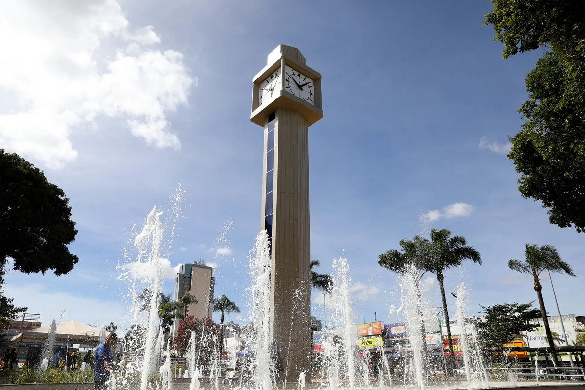

Praça do Relógio
📍 Localização: Taguatinga - DF

O Coração de Taguatinga
Localizada no centro de Taguatinga, a Praça do Relógio é o ponto de referência mais famoso da cidade. Marcada pelo seu icônico relógio de 15 metros de altura e pela estação central do metrô, é um dinâmico centro de circulação diária e comércio.